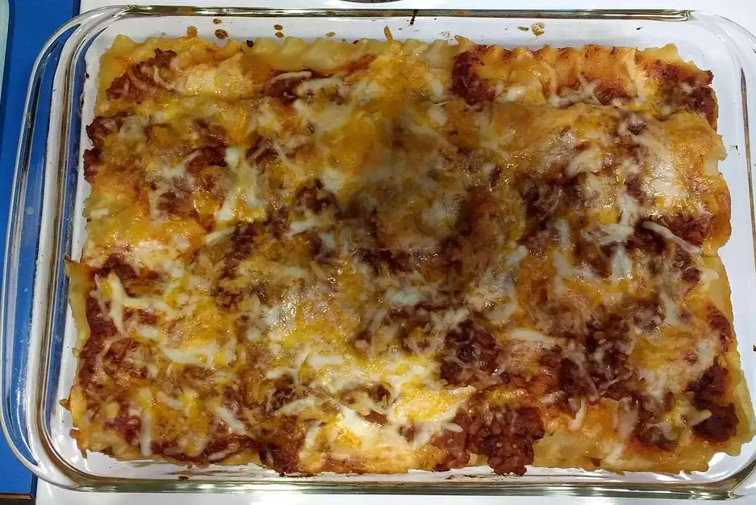

lasagna

Description
Love cheesey lasagna?! Well this is the perfect recipe for you! Don't worry though it isn't just cheese, this meal also containts the right amount of protein.Some nutrition facts for you: 643 calories; protein 41.3g; carbohydrates 53.4g; fat 29.3g; cholesterol 108.3mg; sodium 707.3mg.
This recipe is super easy to make and does not take any time at all. Few prepartions with silverware and preheating the oven. The original recipe serves eight people but don't worry you can adjust that and always add more!
Ingredients
- 16 ounce package lasagna noodles
- 1 pound lean ground beef
- salt and pepper
- 16 ounce jar spaghetti sauce
- 1 clove garlic,minced
- 1/2 pound shredded mozzarella cheese
- 1/2 pound shredded cheddar cheese
- 1 pint ricotta cheese
Steps
- Bring a large pot of lightly salted water to a boil. Add pasta and cook for 8 to 10 minutes or until al dente; drain.
- Preheat oven to 350 degrees F (175 degrees C). In a large skillet over medium-high heat, brown beef and season with salt and pepper; drain. Stir in spaghetti sauce and garlic and simmer 5 minutes.
- In a medium bowl, combine mozzarella, Cheddar and ricotta; stir well. In 9x13 inch pan, alternate layers of noodles, meat mixture and cheese mixture until pan is filled.
- Bake in preheated oven for 30 minutes, or until cheese is melted and bubbly.